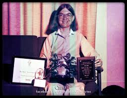

Carol Shaw
É a primeira mulher a trabalhar na indústria de games, sendo uma das principais pioneiras para a igualdade de gêneros nesse segmento.
Saiba MaisIrmã Mary Kenneth Keller
Mary Kenneth Keller foi uma freira nascida nos Estados Unidos em 1913 que dedicou sua vida às ciências da computação.
Saiba Mais
Radia Perlman
Se Tim Berners-Lee é o pai da internet, Radia Perlman pode ser considerada como a mãe.
Saiba MaisHedy Lammar
Durante a Segunda Guerra, Hedy Lamarr criou junto com o compositor e também inventor George Antheil um sofisticado aparelho de interferência em rádio para despistar radares nazistas.
Saiba Mais